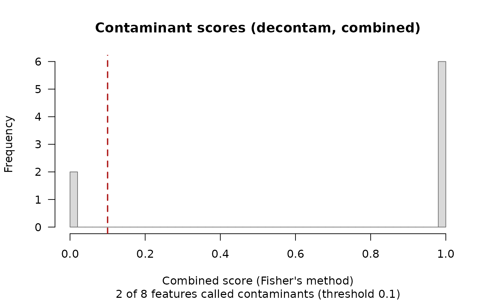
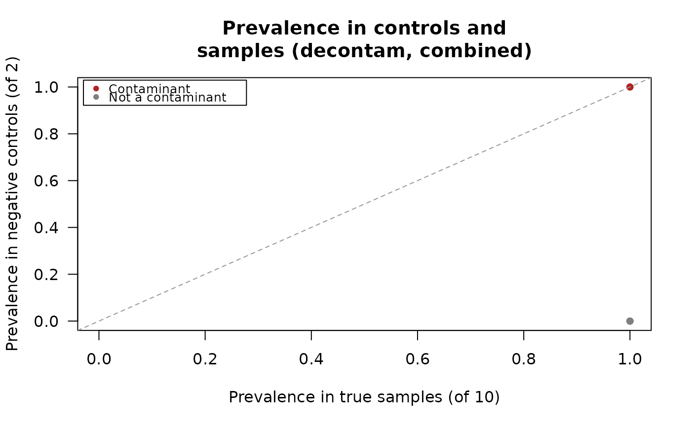
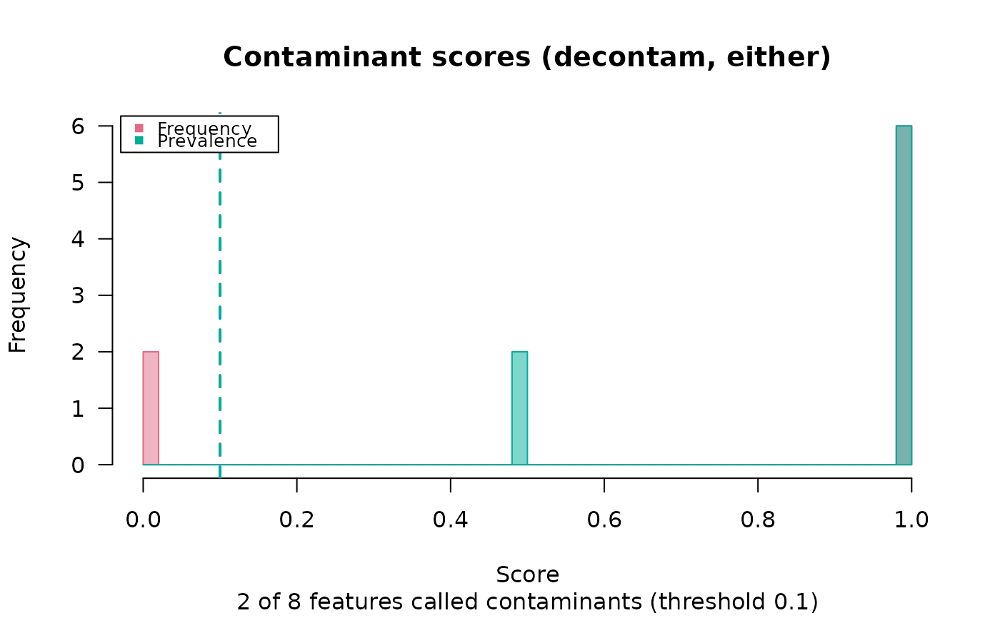

type = 'scores'(the default): a histogram of the scores, with thethresholdas a dashed line. Davis et al. (2018) choose the threshold in the trough between the low scores of the contaminants and the high scores of the rest. Withmethod = 'either'or'both', the frequency and prevalence scores are drawn over each other, each with its threshold.type = 'prevalence': each feature's prevalence in the negative controls against its prevalence in the true samples (the share of each it is present in), with the features called highlighted. Contaminants sit above the diagonal. Needs a result made withneg.
Arguments
- x
A
decontam()ordecontam_not()result.- type
'scores'or'prevalence'.- legend
Where the legend goes, as a
graphics::legend()keyword ("topleft", ...), orNULLfor none.- ...
Passed on to
graphics::hist()('scores'; such asbreaks,mainorcol) orgraphics::plot()('prevalence'; such asmain,pchorcex).
Examples
set.seed(1)
conc <- c(exp(seq(1, 4, length.out = 10)), 0.5, 0.6)
neg <- rep(c(FALSE, TRUE), c(10, 2))
counts <- matrix(rpois(12 * 8, 200), 12, 8)
counts[, 1:2] <- round(counts[, 1:2] * 5 / conc)
counts[11:12, 3:8] <- 0
res <- decontam(counts, conc, neg)
plot(res)

plot(res, 'prevalence')

plot(decontam(counts, conc, neg, method = 'either'))
